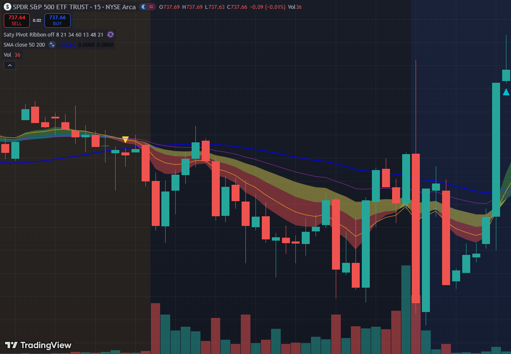

+$352
+34% · 6c contracts

10:30 · REJECTION
rally top, ribbon flips bear
ENTRY · 6c @ $1.71
breakdown bar fires
EXIT · $2.30 · +34%
partial scale, runner cut early
15m · BATS:SPY · Saty Pivot Ribbon + SMA 50/200 + Volume. Yellow ▼ is the rally rejection; the brown/red ribbon underneath the falling price is the bearish ride that paid the position.
SPY opened weak, ran a counter-trend bounce into the descending-trendline level, and rejected hard on a red bar with above-average volume. Ribbon stacked bearish. Classic setup — but this one is the floor of what the pattern produces, because I was working in parallel and management was rushed.
Manual · J only
What I did that day
Entry~10:30 ET, 6 contracts @ $1.71
StopDiscretionary, watching ribbon
Exit$2.30 (avg), partial scale
ReasonRibbon weakening, busy at work
Result+$352 / +34%
IssueCompromised management → smallest gain of the 3
v14 engine · today
BASE TIER · 3 contracts
What the system would do now
DetectBearish setup at 10:30, 8/10 score
Triggerslevel_rejection (single)
Sizing3 contracts (single trigger = BASE tier)
Strike2-strike ITM (delta ~0.7) for stronger move-capture
StopPremium −8% mechanical · level reclaim hard exit
TP12 contracts at next chart level (or +30% premium)
Runner1 contract on ribbon ride · exits on stack flip + 30c spread